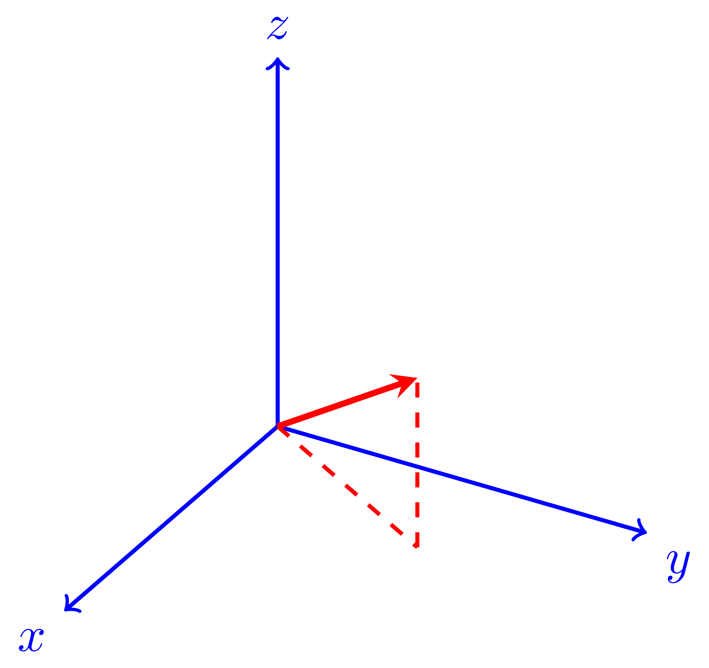

Besides generating TikZ figures within a
See
Let us see here how to use the
The first step is inserting an executable field using the menu:
(there are more options under
This results in a yellow-colored field, introduced by the “Graph” title on a gray background:
Press ⇧Return to start typing or pasting
code; pressing Return now would immediately compile
the yet-empty code, yielding a blank figure. Once ⇧Return
has been pressed for the first time and it becomes possible to type
code, the effects of the keys change: ⇧Return
itself executes the code (generates the image), while Return
inserts a new line (the behaviour of the Return and
⇧Return key combinations is described in the
Manual at
As a first example, let us choose one based on TikZ only, that
does not need any further LaTeX packages, taking it from the guide
“A very minimal introduction to TikZ” by Jacques
Crémer (available at https://cremeronline.com/LaTeX/minimaltikz.pdf,
see section 4.1). Since we want to use the TikZ option of the
%tikz
\begin{tikzpicture}
\draw [fill=red,ultra thick] (0,0) rectangle (1,1);
\draw [fill=red,ultra thick,red] (2,0) rectangle (3,1);
\draw [blue, fill=blue] (4,0) -- (5,1) -- (4.75,0.15) -- (4,0);
\draw [fill] (7,0.5) circle [radius=0.1];
\draw [fill=orange] (9,0) rectangle (11,1);
\draw [fill=white] (9.25,0.25) rectangle (10,1.5);
\end{tikzpicture}
Press ⇧Return to execute the code and obtain after a few seconds the TikZ picture:
The appearance within the TeXmacs editor is a bit rough, but it is fine in the converted pdf documents.
The executable
Placing the cursor at the generated figure (just after it: the cursor becomes as tall as the figure) makes two functions available.
First function: get back to the executable field
With the cursor at the figure (in this case, it can be placed before the figure as well as after it), press Return and obtain back the executable field, with the code ready for editing:
%tikz
\begin{tikzpicture}
\draw [fill=red,ultra thick] (0,0) rectangle (1,1);
\draw [fill=red,ultra thick,red] (2,0) rectangle (3,1);
\draw [blue, fill=blue] (4,0) -- (5,1) -- (4.75,0.15) -- (4,0);
\draw [fill] (7,0.5) circle [radius=0.1];
\draw [fill=orange] (9,0) rectangle (11,1);
\draw [fill=white] (9.25,0.25) rectangle (10,1.5);
\end{tikzpicture}
Press ⇧Return to compile and display again. This process can be repeated as many times as one wishes.
Second function: get the inactivated image macro
Again with the cursor at the figure (in this case only after the figure: placing it before the figure does not make the function we are describing available), press ⌫ and obtain the inactivated TeXmacs image macro:
<image||0.618par|||>
The script is now invisible (it is inside a hidden <script-output||||> macro).
One possibility here is to adjust the width of the image: as an example, place the cursor in the field with the width and change it from 0.618par to 0.9par
<image||0.9par|||>
press Return to get back to the figure, which has now become larger:
The initial script is again accessible (with the Return key), but accessing and executing it resets the figure size to 0.618par.
The other parameter fields in the figure macro can be used to alter the height of the image (second parameter, in this case the image proportions are not preserved) and its placement with respect to the insertion point (third and fourth parameters):
<image||0.5par||0.2par|0.1par>
and again activating with Return obtain
The white space above the line you are reading now is part of the image field, where the image itself has been sized down and shifted right and up by the change of the macro parameters.
As in
Here is the same code (copied from this TeX StackExchange
question) as in Example of TikZ figure generation with the
Graph plugin; it needs the package tikz-3dplot:
%pdflatex
\documentclass[tikz]{standalone}
\usepackage{tikz-3dplot}
\begin{document}
\tdplotsetmaincoords{60}{120}
\begin{tikzpicture}[
scale=3,
tdplot_main_coords,
axis/.style={->,blue,thick},
vector/.style={-stealth,red,very thick},
vector guide/.style={dashed,red,thick}]
%standard tikz coordinate definition using x, y, z coords
\coordinate (O) at (0,0,0);
%tikz-3dplot coordinate definition using r, theta, phi coords
\tdplotsetcoord{P}{.8}{55}{60}
%draw axes
\draw[axis] (0,0,0) -- (1,0,0) node[anchor=north east]{$x$};
\draw[axis] (0,0,0) -- (0,1,0) node[anchor=north west]{$y$};
\draw[axis] (0,0,0) -- (0,0,1) node[anchor=south]{$z$};
%draw a vector from O to P
\draw[vector] (O) -- (P);
%draw guide lines to components
\draw[vector guide] (O) -- (Pxy);
\draw[vector guide] (Pxy) -- (P);
\end{tikzpicture}
\end{document}
Executing the code (press ⇧Return) yields

Once more, the
If the first line does not correspond to any of the backends known
to
The plugin may hang during compilation, displaying the notice Busy... in the executable
If this happens, none of the